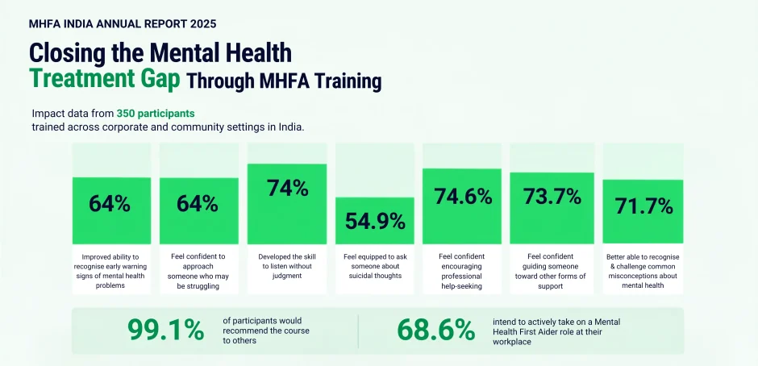

India has a mental health problem not just in terms of how widespread distress has become, but in how few people are actually getting help. The gap between the number of people who need support and the number who eventually receive it remains staggering. And filling that gap with professional services alone was never going to be enough.
The treatment gap we are facing right now is huge. While there are multiple factors contributing to this crisis, one of the biggest hurdles is the massive gap between the soaring demand for care and the limited supply of trained mental health professionals. What this means in real life is that the time between someone first starting to struggle and finally sitting down with a therapist or psychiatrist can be painfully long. But there is another layer to this that often gets overlooked: even the people closest to someone in distress frequently do not know what to do. Friends notice something is off. A manager sees that an employee is withdrawing. A family member hears something worrying. And then, simply because they do not know how to respond, they either say the wrong thing or say nothing at all.
This isn't about indifference. Most people genuinely want to help. They just haven't been given the tools.
The Power of Early Intervention and Layperson Training
The evidence for early, community-level intervention is clear. When people in everyday settings — workplaces, colleges, families — are trained to recognise the early signs of mental health distress, respond without judgment, and guide someone toward professional care, outcomes improve. Crises are caught before they escalate. People feel less alone. The burden on formal healthcare systems eases.
This is the logic that drives Mental Health First Aid (MHFA) training. The point isn't to turn a colleague into a therapist. It's to build a first line of response, people who can show up competently in those early, uncertain moments.
This isn't about indifference. Most people genuinely want to help. They just haven't been given the tools.

Measuring the Impact of Mental Health First Aid (MHFA) Training: The 2025 Data
In 2025, MHFA India ran training programmes across a range of corporate and community settings, gathering detailed feedback from 350 participants who completed either the in-person Standard MHFA course or the Blended online format.
The numbers that came back were notable. On recognising early warning signs of mental health problems, 64% of participants strongly agreed their ability had genuinely improved. The same proportion said they now feel confident enough to actually approach someone who appears to be struggling. These aren't theoretical shifts; they reflect a real change in what people feel prepared to do.
Listening without judgment which sounds deceptively simple but is actually quite hard, showed one of the stronger shifts: 74% strongly agreed they had developed this skill meaningfully through the training.
Tackling Tough Mental Health Conversations
Then there's the harder territory. Asking someone directly about suicidal thoughts is the kind of conversation most people instinctively avoid, not out of callousness but out of fear of saying the wrong thing or making things worse. After the training, 54.9% strongly agreed they now feel equipped to have that conversation. Encouraging professional help-seeking came in at 74.6%, and 73.7% said they feel confident guiding someone toward other forms of support
One figure that stands out: 71.7% said the course helped them recognise and challenge common misconceptions about mental health which matters enormously in a country where stigma around seeking help still runs deep
Download the Measurable Impact of Mental Health First Aid Training (2018-2024)
Download ReportTransforming the Workplace and Community
The qualitative feedback was telling in its specificity. One participant described realising, mid-course, that their default instinct was to jump straight into problem-solving mode when someone came to them in distress. The training pushed them to reconsider that to understand that sometimes being present and listening is more valuable than arriving with answers.
Another noted something that came up repeatedly in responses: the content felt like it was actually made for India. Not adapted in a superficial way, but genuinely built around local data, local context, local examples. That distinction mattered to people. As one learner put it, "It was such a pleasure to see the content suited for Indian audience... The content was appropriately adapted to the local requirement."
A near-unanimous 99.1% said they would recommend the course to others. The most common suggestions weren't about quality they were about wanting more. More time for sessions, more scenarios, more depth on specific topics like anxiety management, resilience-building, and psychological wellbeing in corporate settings.
The Growing Demand for Corporate Mental Health Training
Completing the training isn't a final destination. MHFA India recognises this and has built post-training structures to support it, helping trained MHFAiders set up peer communities within their organisations, facilitating conversations with management, and receiving mentoring and supervision.
The 68.6% of participants who said they intend to actively take on a Mental Health First Aider role at their workplace is significant. It suggests the training doesn't just inform — it motivates. People leave with not just new knowledge but a different sense of what they can contribute.
Ready to Build Mental Health Readiness in Your Organization?
Bring internationally recognised, evidence-based
Mental Health First Aid training to your workplace or community
How to Implement MHFA India Training in Your Corporate Organization
Given that most people spend a third of their waking hours at work, the case for embedding mental health first aid into workplace culture is straightforward. It doesn't require large infrastructure or significant ongoing cost, it requires people with the right skills and the confidence to use them.
To bridge the gap between classroom training and day-to-day practice, MHFA India has introduced several post-training activities. These initiatives range from structuring internal MHFAider communities to providing one-on-one supervision. However, the simplest—and completely free—resource for those who are trained is the ongoing newsletter, which helps individuals stay continuously updated with the latest knowledge and skills. Ultimately, every trained Mental Health First Aider represents one more person ready to recognise distress, start a supportive conversation, and connect someone to the help they need.
Frequently Asked Questions
Can an employee be dismissed for depression?
No. The Mental Healthcare Act 2017 establishes the right of persons with mental illness to work without discrimination. Dismissing an employee on grounds of depression is contrary to this legislation, and organisations are legally expected to provide reasonable adjustments and support continued employment.
How do you talk to an employee about depression?
Choose a private moment, start with what you have noticed rather than assumptions, listen without judgment, and encourage them to seek professional support. Follow up and respect confidentiality.
How does depression in the workplace affect productivity?
Depression can reduce concentration, energy and motivation, and increase absenteeism. Early support, flexibility and a supportive culture help people stay well and productive.
Can Mental Health First Aid training help managers support depressed employees?
Yes. MHFA training teaches managers to recognise early signs, start a supportive conversation and guide an employee towards appropriate help.